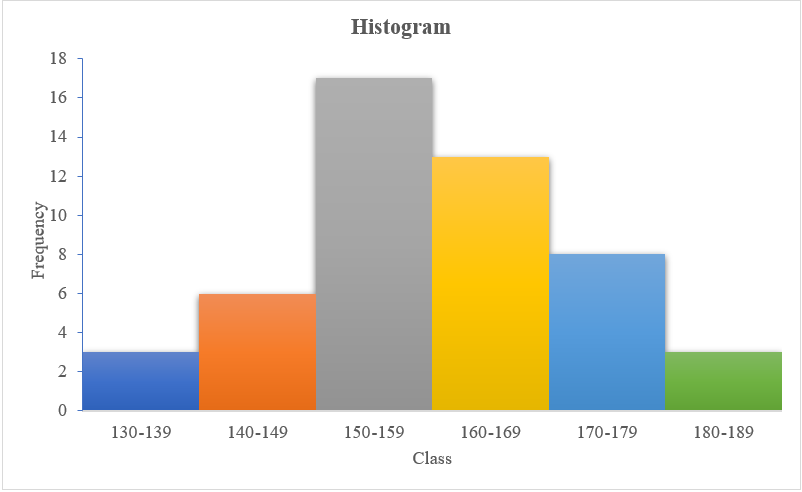

3 Graphical representation
Graphs and diagrams play a vital role in statistics by transforming complex data into clear, visual formats that are easier to interpret and analyze. While frequency distributions in tabular form help organize raw data, graphical representations provide a more intuitive way to understand patterns, trends, and relationships within the data. By converting numbers into visual elements, graphs make it simpler to convey information effectively, making them indispensable tools in research, analysis, and communication. Depending on the nature of the data and the intended purpose, various types of graphs and diagrams can be employed to illustrate key insights. This chapter focuses on the fundamental graphs and charts used in statistics to visually represent data.
3.1 Histogram
A histogram is a graphical representation used to display the frequency distribution of continuous data. It consists of adjacent rectangles, where:
- The base of each rectangle lies along the horizontal axis, with the width determined by the class intervals.
- The height of each rectangle is proportional to the frequency of the corresponding class.
Unlike bar charts, histograms have no gaps between the rectangles, emphasizing the continuity of the data. The area of each rectangle represents the frequency, making it an effective tool for visualizing the distribution, identifying patterns, and highlighting any skewness or outliers in the data.
If the class intervals are of equal size, then the heights of the rectangles are proportional to the class frequencies and it is then customary to take the heights of the rectangles numerically equal to the class frequencies. If the class intervals are of different widths, then the heights of the rectangles are proportional to \(\frac{\text{Class Frequency}}{\text{Class Width}}\). This ratio is called frequency density.
Table below shows the frequency distribution of the plant height of 50 plants. You can see how it can be represented using a Histogram
| Plant height | 130 – 139 | 140 – 149 | 150 – 159 | 160 – 169 | 170 – 179 | 180 – 189 |
|---|---|---|---|---|---|---|
| Frequency | 3 | 6 | 17 | 13 | 8 | 3 |

3.2 Ogive
Ogive is also known as cumulative frequency curve. It is a graphical representation that plots cumulative frequencies against class boundaries, connecting the points with a smooth curve. This curve effectively illustrates the accumulation of frequencies, making it useful for understanding data distribution and determining percentiles or medians.
3.3 Types of ogives
There are two main types of cumulative frequency curves:
1. Less than Ogive: This is constructed using the upper limits of the classes and their corresponding cumulative frequencies.
2. Greater than Ogive: This uses the lower limits of the classes and their corresponding cumulative frequencies.
Less than Ogive
The less than ogive, also known as the less than type cumulative frequency curve, is created by plotting the cumulative frequencies against the upper class boundaries. For example, consider the plant height data for 50 plants. By using the upper class limits and their cumulative frequencies, we can construct a smooth curve that provides insights into the data distribution.
| Upper limit | 139 | 149 | 159 | 169 | 179 | 189 |
|---|---|---|---|---|---|---|
| Less than Cumulative frequency | 3 | 9 | 26 | 39 | 47 | 50 |

Greater than ogive
The Greater than ogive, also known as the greater than type cumulative frequency curve, is constructed by plotting the cumulative frequencies against the lower class boundaries. In this case, instead of using the upper limits like in the “Less Than Ogive,” we use the lower class limits and their corresponding cumulative frequencies. This curve helps visualize the cumulative frequency distribution from the highest class down to the lowest, providing insights into the number of observations greater than a specific value.
| Lower Limit | 130 | 140 | 150 | 160 | 170 | 180 |
|---|---|---|---|---|---|---|
| Greater than Cumulative frequency | 50 | 47 | 41 | 24 | 11 | 3 |
Intersection of both less than and greater than ogives gives the median
3.4 Frequency polygon
A grouped frequency table can also be represented by a frequency polygon, a special type of line graph. To construct it, plot the class frequencies against the corresponding class midpoints and connect successive points with straight lines. The frequency polygon can also be derived by joining the midpoints of a histogram.
| Class Midpoints | 134.5 | 144.5 | 154.5 | 164.5 | 174.5 | 184.5 |
|---|---|---|---|---|---|---|
| Frequencies | 3 | 6 | 17 | 13 | 8 | 3 |

Frequency Polygon illustration
3.5 Stem-and-leaf plot
A stem-and-leaf plot is a graphical device useful for representing a relatively small set of data that takes numerical values. To construct a stem-and-leaf plot, we partition each measurement into two parts: the stem (the leading digits) and the leaf (the trailing digits). This method retains the exact value of each observation, unlike a frequency distribution. It also clearly shows the distribution of data within each group. A stem-and-leaf plot conveys similar information as a histogram, with the added benefit of retaining individual data points. It provides insights into the range, concentration of measurements, and symmetry of the data.
Consider the example:
12, 16, 21, 25, 29, 26, 30, 31, 37, 42, 45.
The stem-and-leaf plot for this data is shown below:
3.6 Bar chart
A bar chart or bar graph is a diagram consisting of a series of horizontal or vertical bars of equal width. The bars represent various categories of the data. There are three types of bar charts, and these are simple bar charts, component bar charts and grouped bar charts.
Simple bar chart
In a simple bar chart, the height (or length) of each bar is equal to the value of category in the y-axis it represents. For example data below shows the production of coconut in five districts of Kerala in a certain year.
| District | Production (million nuts) |
|---|---|
| Alappuzha | 700 |
| Kannur | 800 |
| Thrissur | 980 |
| Ernakulam | 1100 |
| Wayanad | 1400 |
Component bar chart
In a component bar chart, the bar for each category is subdivided into component parts; hence its name. Component bar charts are therefore used to show the division of items into components. This is illustrated in the following example.
Example shows the distribution of sales of agricultural produce from a Farm in 1995, 1996 and 1997 and its corresponding component barchart.
Component Barchart illustration
The component bar chart shows the changes of each component over the years as well as the comparison of the total sales between different years.
Grouped bar chart
For a grouped bar chart, the components are grouped together and drawn side by side. We illustrate this with the above example.

3.7 Histogram versus bar chart
| Items | HISTOGRAM | BAR CHART |
|---|---|---|
| Meaning | Histogram refers to a graphical representation, that displays data by way of bars to show the frequency of numerical data. | Bar graph is a pictorial representation of data that uses bars to compare different categories of data. |
| Indicates | Distribution of non-discrete variables | Comparison of discrete variables |
| Presents | Quantitative data | Categorical data |
| Spaces | Bars touch each other, hence there are no spaces between bars | Bars do not touch each other, hence there are spaces between bars. |
| Elements | Elements are grouped together, so that they are considered as ranges. | Elements are taken as individual entities. |
| Can bars be reordered? | No | Yes |
| Width of bars | Need not to be same | Same |
3.8 Pie charts
A pie chart is a circular graph divided into sectors, each sector representing a different value or category. The angle of each sector of a pie chart is proportional to the value of the part of the data it represents. The bar chart is more precise than the pie chart for visual comparison of categories with similar relative frequencies.
Steps for constructing a pie chart
- Find the sum of the category values.
- Calculate the angle of the sector for each category, using the following formula.Angle of the sector for category A = \(\frac{\text{value of category A}}{\text{sum of category values}} \times 360\)
- Construct a circle and mark the centre.
- Use a protractor to divide the circle into sectors, using the angles obtained in step 2.
- Label each sector clearly.
See this example. The production of different commodities in India during a particular year is given as follows.
| Commodities | Production(tonnes) | Angle |
|---|---|---|
| Wheat | 27000 | (27000/81000)×360= 120 |
| Grams | 22500 | 100 |
| Maize | 13500 | 60 |
| Rice | 6750 | 30 |
| Sugar | 11250 | 50 |
| Total | 81000 | 360 |
3.9 Advanced Visualization
While this book focuses on basic plots and charts, significant advancements have been made in the field of data visualization. New types of graphs and charts have been developed to help in more effective representation and communication of data. Although a detailed discussion of these advanced graphs is beyond the scope of this book, we provide an overview of some common and recently developed types for reference. For more detailed information, you can explore resources such as The R Graph Gallery.
It is important to be aware of the wide variety of visualization tools available, as they can enhance your understanding of data and improve your ability to communicate insights clearly. Below are a few popular graph types widely used in modern data analysis.
::: {layout-nrow = 3}
Few graphs that can be drawn in R :::
3.9.1 Advanced graphs
In this section, we highlight innovative and user-developed graph types that go beyond standard visualizations. These advanced graphs are tailored to provide deeper insights into complex datasets, offering unique perspectives on the data. By incorporating customized elements and more sophisticated visualization techniques, these graphs enable users to uncover patterns, relationships, and trends that traditional graphs might miss. Such graphs are increasingly being used to enhance data storytelling, improve decision-making, and facilitate a more thorough understanding of complex information.
“Statistics is the grammer of science”
- Karl Pearson